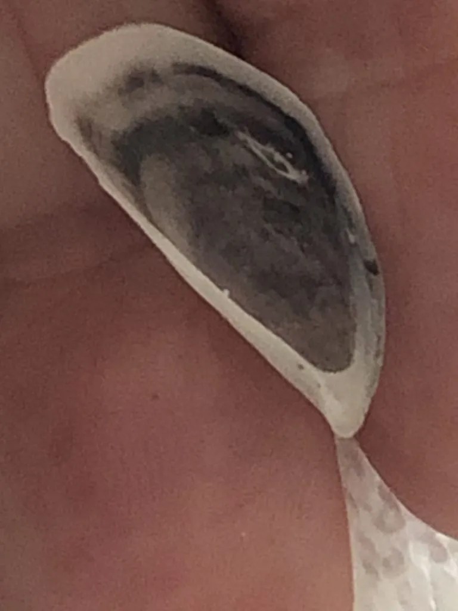

软体动物 · 动物界
沙筛贝 Mytilopsis sallei

壳形似贻贝的小型入侵贝类，原产热带美洲，附着于中国南方港湾设施，繁殖极快，挤占本土贝类空间。
- 分类
- 门软体动物门纲双壳纲目帘蛤目科饰贝科属沙筛贝属
- 栖息环境
- 港湾码头、船底、养殖设施与咸淡水交汇的人工基质
- 地理分布
- 原产热带美洲，现入侵印度、东南亚及中国南方沿海
- 保护级别
- 入侵物种，无保护需求，需加强监测与防除
物种志
沙筛贝的壳长约二至三厘米，壳形楔状，前端尖细，壳面灰白至黄褐色，常有紫褐色的放射条纹，壳内面有隔板状的突起，这是饰贝科的特征。它靠足丝附着在硬质表面，密集时层层叠压，形成厚达数厘米的壳层，把管道和礁面糊得严严实实。
它原产热带美洲的大西洋沿岸，二十世纪随船底污损和压舱水传播到印度、东南亚和中国南方沿海，如今在福建、广东、香港的港湾、码头和养殖设施上大量出现。它繁殖力强，幼体浮游期短，能在短时间内占领人工基质，挤占牡蛎和本土贻贝的附着空间，堵塞管道和冷却水系统，是典型的入侵污损生物。防治主要靠定期清理、防污涂料和压舱水管理。
形态与习性
- 壳长约二至三厘米，楔状
- 壳面灰白至黄褐，具紫褐放射条纹
- 壳内有隔板状突起，为饰贝科特征
- 附着以足丝固着，密集层叠
- 危害堵塞管道，挤占本土贝类空间
- 传播随船底污损与压舱水扩散
趣味知识
- 它在管道里一层压一层地长，能把冷却水管堵得水泄不通。
- 它从美洲一路搭船来到亚洲，是压舱水带来的不速之客。
- 壳内那排小隔板是它的标志，本土贻贝没有这个构造。